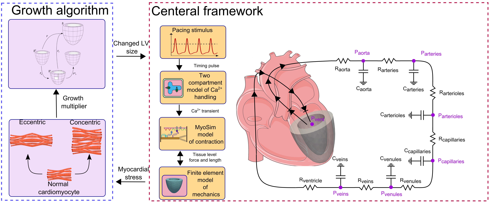
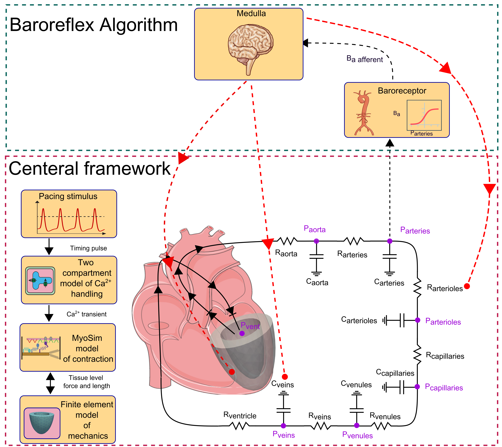

Importance of baroreflex control of arterial pressure in prediction of LV growth in response to valvular diseases
 Valvular disorders, such as aortic stenosis and mitral regurgitation, change the ventricular loading and cardiac function, but the arterial pressure and cardiac output normally remain unchanged. Current approaches to cardiac G&R have mainly focused on the geometry of the LV and paid less attention to hemodynamic feedback. The baroreflex loop is an important short-term hemodynamic feedback mechanism that maintains the arterial pressure by adapting the cardiac contractility, heart rate, and vascular tone to acute changes in the ventricular loading. Current models are generally performed under constant heart rate and contractility assumptions, with no mechanisms for preserving the arterial pressure.
In current work, MyoFE framework was extended by adding a baroreflex and a growth algorithm to study the effect of hemodynamic reflex in prediction of LV growth. As described in our previous works, concentric growth was driven by avereged total stress along myofiber over the cardiac cycle, while the eccentric growth was governed by the averaged myofiber passive stress over the cardiac cycle.
Valvular disorders, such as aortic stenosis and mitral regurgitation, change the ventricular loading and cardiac function, but the arterial pressure and cardiac output normally remain unchanged. Current approaches to cardiac G&R have mainly focused on the geometry of the LV and paid less attention to hemodynamic feedback. The baroreflex loop is an important short-term hemodynamic feedback mechanism that maintains the arterial pressure by adapting the cardiac contractility, heart rate, and vascular tone to acute changes in the ventricular loading. Current models are generally performed under constant heart rate and contractility assumptions, with no mechanisms for preserving the arterial pressure.
In current work, MyoFE framework was extended by adding a baroreflex and a growth algorithm to study the effect of hemodynamic reflex in prediction of LV growth. As described in our previous works, concentric growth was driven by avereged total stress along myofiber over the cardiac cycle, while the eccentric growth was governed by the averaged myofiber passive stress over the cardiac cycle.
A multiscale model of LV growth and its regression in response to valvular diseases
 Computer based models are providing new insights on the progression of cardiac growth and remodeling. Despite numerous studies that have developed mathematical formulations to represent these phenomena, the choice of driving stimulus for these growth laws is still up for debate. Conventionally, computational models of cardiac growth have utilized either myofiber stress, strain, or some combination of the two as their driving signal. Recently in a pioneering work, it was shown that the aspect ratio of myocytes responded to MEK1-ERK signaling with myocytes becoming wider with increasing values of the contractile force-time integral. They also suggested that ventricular mass was regulated by calcineurin signaling, and increased if the force-time integral deviated (in either direction) from a homeostatic setpoint. The present study was developed based on this general hypothesis. An additional research goal was to investigate pathophysiological conditions that are directly relevant to clinical care. Accordingly, the first step was to extend the multiscale model of cardiovascular function named MyoFE described in Chapter 2 so that the left ventricular shape grows in response to change in biochemical signal. In this manuscript, concentric growth responded to the averaged total wall stress within the cardiac cycle while eccentric growth was driven by averaged passive intracellular stress. Multiple simulations were then performed to investigate how the ventricle responded to changes in hemodynamic load associated with different types of valvular disease.
A multiscale model of baroreflex control of artierial pressure that adapts the contractility of remote regions in response to acute myocardial infarction
 Infarcted hearts undergo various types of remodeling, including changes in structure and mechanics of the scar region, and changes in contractility and architecture of myofibers in the remote region. Such a change in contractile behavior of remote regions is mainly driven by acute response of the baroreflex loop to compensate for the loss of contractile properties of infarcted myocardium. In this study we utilized a high-fidelity FE model of the left ventricle that is coupled with a baroreflex feedback loop that maintains arterial pressure at a setpoint level by modulating heart rate, intracellular Calcium handling, molecular-level function of both the thick and the thin myofilaments, and vascular tone. The baroreflex loop predicted higher heart rate with increased contractile function of remote regions and higher vascular tone in response to acute MI.
Multiscale modeling of LV growth in valvular diseases
The heart adapts to its environment and changes its shape (referred as cardiac growth) in response to hemodynamic loads, including pathological conditions associated with valvular disease. In valvular disease, cardiac growth initiates as an early adaptive response that can progress to remodeling and subsequent heart failure if the valvular dysfunction persists. In this study, we initially extended PyMyoVent with concentric growth (wall thickening / thinning) and eccentric growth (chamber dilation / constriction) driven by cell-level stresses in half-sarcomeres.
In the next attempt, we hypothesized the idea of concentric growth being driven by the energy used by the myocytes for contraction (expressed as myosin ATPase normalized to myofibrillar volume). The new framework reproduced clinical measures of left ventricular growth in three types of valvular disease, namely aortic stenosis, aortic insufficiency, and mitral insufficiency.
Systolic strain analysis using MRI images
 Cardiac magnetic resonance (CMR) imaging is a widely used method for assessing cardiac
structure and function. Myocardial strain, which can be derived from CMR images, has been
investigated as a possible diagnostic tool for estimating contractile function in the heart.
Recently, feature-tracking of cine images has been used to calculate systolic strain in
patients with various types of heart disease in order to predict functional recovery and clinical outcomes.
Although mouse models are commonly used to enhance our understanding of cardiac disease,
strain derived using feature-tracking of cine images has not been widely investigated in mice.
Cardiac magnetic resonance (CMR) imaging is a widely used method for assessing cardiac
structure and function. Myocardial strain, which can be derived from CMR images, has been
investigated as a possible diagnostic tool for estimating contractile function in the heart.
Recently, feature-tracking of cine images has been used to calculate systolic strain in
patients with various types of heart disease in order to predict functional recovery and clinical outcomes.
Although mouse models are commonly used to enhance our understanding of cardiac disease,
strain derived using feature-tracking of cine images has not been widely investigated in mice.
Baroreflex control of arterial pressure
 Baroreceptors are sensors located at the carotid sinus and aortic arch which are parts of
the short-term hemodynamics feedback control of arterial pressure within our body. The main
goal of baroreflex mechanism is to maintain arterial pressure within the normal range by regulation
of cardiac function via sympathetic and parasympathetic neuron pathways. Thereby, having a model of
hemodynamic feedback loop implemented into multiscale models of cardiovascular function is necessary.
PyMyoVent is a multiscale model of a single left ventricle that pumps blood around a systemic model of
circulation. We have implemented a model of baroreflex control of arterial pressure to PyMyoVent
that regulates chronotropism, cell-level contractility, and vascular tone.
Baroreceptors are sensors located at the carotid sinus and aortic arch which are parts of
the short-term hemodynamics feedback control of arterial pressure within our body. The main
goal of baroreflex mechanism is to maintain arterial pressure within the normal range by regulation
of cardiac function via sympathetic and parasympathetic neuron pathways. Thereby, having a model of
hemodynamic feedback loop implemented into multiscale models of cardiovascular function is necessary.
PyMyoVent is a multiscale model of a single left ventricle that pumps blood around a systemic model of
circulation. We have implemented a model of baroreflex control of arterial pressure to PyMyoVent
that regulates chronotropism, cell-level contractility, and vascular tone.